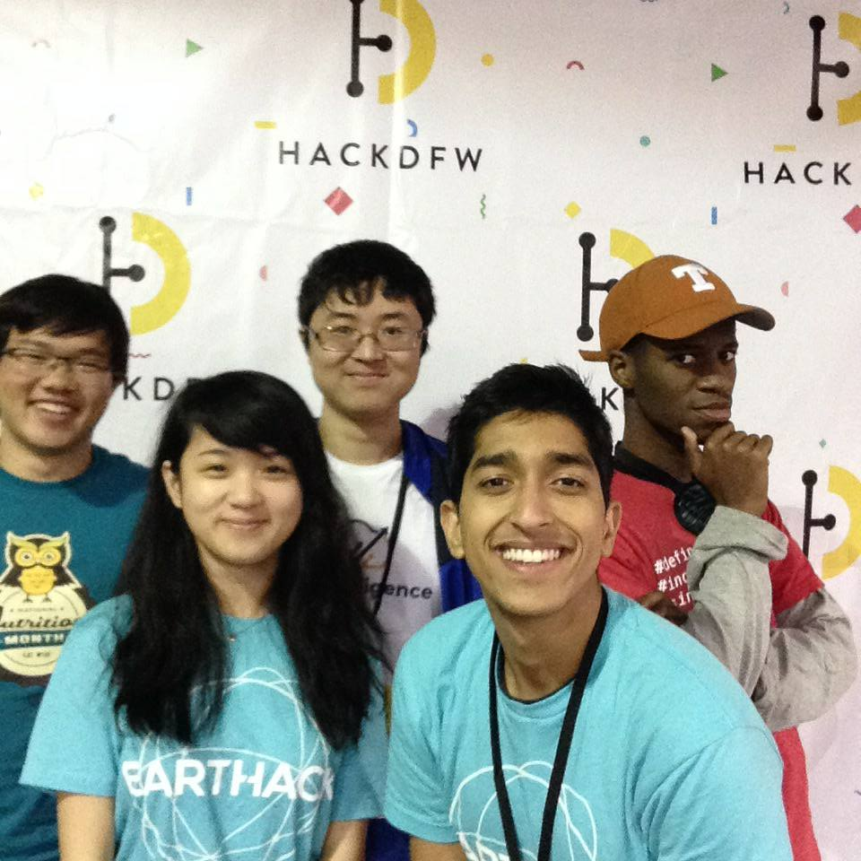
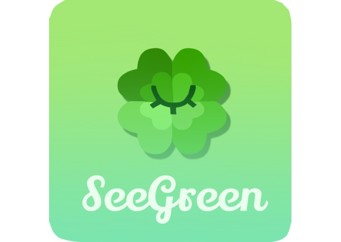
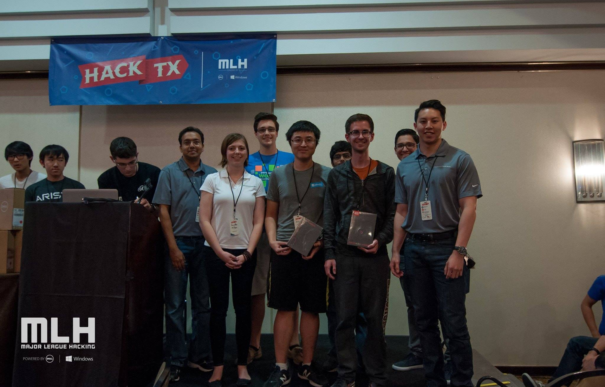
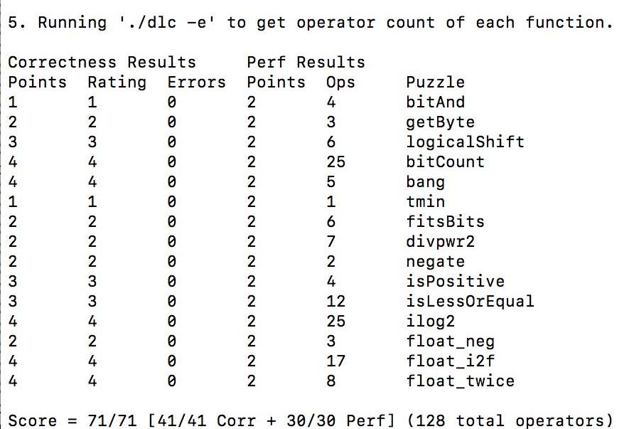
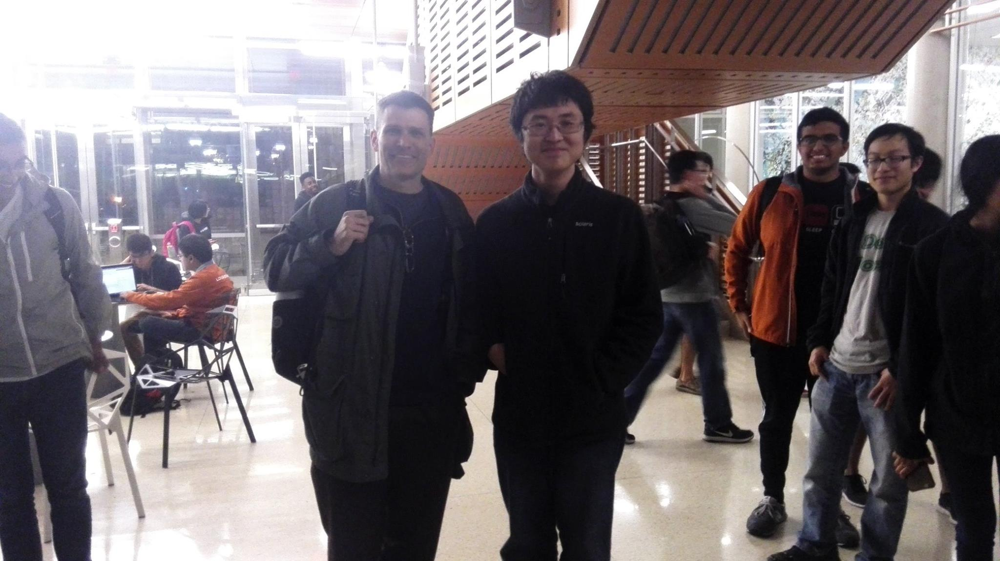

My name is William Han and I'm a freshman in the University of Texas at Austin's Computer Science Department.
This is me!
Important Links
Type help to view a list of available commands and navigate the site.
Type sp17 to view all my projects for this semester.
Type sp17c to view all my open source contributions this semester.
Type fa16 to view all my projects for this semester.
Unfortunately, I didn't contribute to any Open Source projects this semester =/
Projects:
The Earthack/HackDFW Team


SeeGreen is an Android application developed during a 36 hour hackathon called Earthack. The Devpost can be found here.
SeeGreen is an Android application that makes recycling easy! There are two main components: an AI chatbot that makes it easy for the user to quickly identify what objects are recyclable through text or voice input. The second component is the OpenCV camera. The user can point their phone at an object and identify the object automatically. This object's data is then sent to our servers, where we will identify if it will be recyclable or not.
TauTalk is an Amazon Alexa Application devloped during a 36 hour hackathon called Earthack. The Devpost can be found here. The Github Repo can be found here.
TauTalk is a commerical application that allows companies looking to expand into the Amazon Alexa space to easily create an Amazon Alexa application. TauTalk provides companies an easy conduit to producing a lead marketing tool All companies have to do it send their products, sample utterances, and intents to our API in a special format and they'll have a python alexa script that works along with installation instructions.
An application developed during Music Hacks 2017. The Design Doc can be found here
People love music, but there’s no easy way to share it with friends in an organized and elegant way. In addition, it’s hard to keep track of music over many services, which is not only difficult for you but makes it difficult to share music with others. Just sending links or song names can get lost in messaging apps. This application will allow a way for users to sync music over the major platforms (Spotify, YouTube, SoundCloud, Google Play, maybe more?). From there, you can find friends, see playlists, send songs, etc. Other music services don’t have this cross-platform social aspect because they don’t want draw to competitors.
Folio was developed during HackUTD but wasn't finished. It was initially written using React Native, a mobile framework that supports both iOS and Android. I rewrote the entire application for Android only using Android Studio. The Github Repo can be found here.
Folio is a revolutionary application that is targeting the business card and resume market. It makes it super easy to send and receive business cards over Bluetooth and NFC. A user can also scan their card via OpenCV.
NoJS is a quick and dirty website created in the last hour of HackUTD. It searches for JavaScript script tags and it can be accessed here. The Github repo can be found here
Projects:
DiceOut is an android app that simulates a popular gambling game called Sic Bo. It was my first Android App. The Github repo can be found here
Volun-near is an Android application that matches nearby users to a constantly updated list of volunteer opportunities. It was created during MLHPrime 2016. The Github Repo can be found here, and the Devpost for the project can be found here.

SAFE is an android app that is devoted towards helping the user identify a direction to their target location that is the most safe. We take crime data and draw a path for the user that avoids locations in which crimes have happened. The Github Repo can be found here, and the Devpost can be found here.
ISSS WebShell
Updated the ISSS website and added new features. You can visit it here. The Github repo can be found here
Gavel
Gavel is a hackathon judging application created by a MIT hackathon organizer. It can be found here. My commit can be found here. I added a button that allowed users to upload raw judging and project data via a xlsx/csv upload button. I used Python's xlrd package to create this feature, and added a button in the templating to allow user to interact with the feature.
William 'copperstick6' Han, version 1.00-release.
Created by William Han
These shell commands are defined internally. Type help to see this list. Internal commands are highlighted and external links are underlined and can be clicked to run and be opened, respectively.
school: View all my school projects.
projects: View all my side projects
orgs: View all the student orgs I am involved in
git: View the site's source code and other developer information.
clear: Clear the contents of the terminal.
On branch master
Your branch is up-to-date with 'origin/master'.
nothing to commit, working directory clean
A JS library developed in parallel called terminator.js powers the site's terminal-like interface. It has a simple and flexible interface for building custom "programs" and terminal commands, and is also open source.
CS429 (Computer Architecture) Projects:
Data Lab (Lab 1):
The goal of Datalab was to learn about bit manipulations with C. There are a total of 14 puzzles. Below are my results:

I managed to outperform the professor's results and ended up with second on the class scoreboard for the assignment.
Bomb Lab (Lab 2):
A very fun lab! We received a binary bomb and we were told to find inputs that would not cause the bomb to 'explode'. We had to dissassemble the bomb using gdb and then proceed to look for anything in the disassembled x86 file to look for any important things that could defuse the bomb. The first phase of the bomb lab was a simple method that compared the input string with a string stored within a memory address. All you had to do was look at what was stored in that memory address using x/x and then piece together the characters to find the input string.
Calculator Lab (Lab 3)
In this lab, we had to create a C program that would produce x86 assembly using printf statements that would take in an RPN expression (Reverse Polish Notation) and print the result. We were required to implement 4 expressions: adding, subtracting, unary minus, and multiplication.
Attack Lab (Lab 4)
In this lab, we had to investigate Buffer Overflow bugs, and had to inject raw code (bits and bytes) into an x86 assembly file to get a desired output from the code.
Arch Lab (Lab 5)
In this lab, we had to increase the performance of a pipelined processor. The main part of this lab focused on optimizing a method written in Y86 using various optimization techniques we learned in class such as loop unrolling, and moving our data to registers in order to avoid RAW (read after write) data hazards, various other data hazards, and control hazards.
Cache Lab (Lab 6)
In this lab, we had to create a cache simulator that would perform reads and writes properly, evicting the proper data from the set and counting the number of hits and misses

Me with the CS314 Professor, Mike Scott. P.S. He's really cool!
CS314 (Data Structures) Projects:
Code Camp (Assignment 1)
The goal of this project is to familiarize ourselves with coding in Java. Since I claimed credit for Intro to CS 1, this class was a good warmup for what was to come. We had to implement several different methods, such as:
Hamming Distance: Determine the Hamming Distance between two arrays.
Permutations: Determine if one array of ints is a permutation of another array
And more. This assignment was relaly fun and taught me coding standards required for the class.
MathMatrix (Assignment 2)
This assignment was centered around creating a class that creates a new MathMatrix object and performs some of the main linear equations around matrices.
Baby Names (Assignment 3)
The assignment allowed users to query a data base of the top one thousand names in the last century in the US. In addition, I learned to use various data types such as ArrayList and separate classes with arrays as the storage technique to store name data.
HangMan Manager (Assignment 4)
This assignment was a game that put off picking a word until as long as possible in an attempt to rig the game against the user. I utilized Maps (HashMaps and TreeMaps) to organize the data to prepare it to be chosen.
LinkedLists (Assignment 5)
The point of the assignment is to implement a doubly linked list. I utilized the given Node class and implemented a doubly linked list.
Recurstion (Assignment 6)
In this project, we had to use recursion to solve a variety of problems such as:
getBinary: Convert a base 10 integer to binary recursively.
sudokuSolver: Solve a sudoku board recursively.
canFlowOffMap: Determine if water at a given point can flow off the map (an array)
Anagrams (Assignment 7)
A recursive program that would take an input string and find various anagrams that were in the input dictionary file.
Sets (Assignment 8)
In this project, I had to implement three classes of Sets, AbstractSet, UnsortedSet, and SortedSet. I implemented MergeSort and used abstract classes.
Binary Search Tree (Assignment 9)
In this assignment, I had to implement a binary search tree class with all the methods such as insert, delete, and recursive insert and delete.
Huffman Coding (Assignment 10)
The hallmark assignment of the class. We had to write a compression algorithm that would compress files by sorting the commonality of characters in the file and then creating a special BST that wold create a new bit assignment for every character. We also had to write a decompressor that would decompress the file we created. We would reconstruct the tree and perform tree traversals until we got the output file.
Graphs (Assignment 11)
We had to implement Djikstra's Algorithm on an undirected and directed graph to sort through NFL data and rank teams through their win loss records. We constructed undirected and directed graphs and then implemented Djikstra's Algorithm to perform our own rankings.
Rapid Diligence is a web and desktop solution that provides due diligence reports for those looking to purchase and sell web based e-commerce businesses. You can visit the website here and sign up for closed beta.
I worked as a fullstack developer. Through this project, I learned how to prototype quickly using MeteorJS for our frontend, Maven for our backend, and Java for our PDF desktop app. A demo can be provided upon request.
Current ISSS officers for the 2016-2017 school year:
Corporate Team
Communications Team
Presentation Team
Interested in becoming an officer? Opportunities and more information will become available near the end of the school year, though you can contact us at any time for details regarding officer positions.
My general contact email is copperstick6@gmail.com. If you need anything, please feel free to reach out to me.
Classes Taken: CS429 Computer Architecture, CS378 Longhorn Startup
Type in cs429 to see my school projects from CS429.
Type in rapiddiligence to see my Longhorn Startup project.
Classes Taken: CS314 Data Structures, CS311 Discrete Mathematics
Type in cs314 to see my projects in Data Structures
John,
I've hacked the system and have retrieved the nuclear launch codes. be careful and keep these secure so they don't fall into the wrong hands.
Activation Sequence: 0000 0000
President's Secondary Auth: 1234 5678
-Ghostman